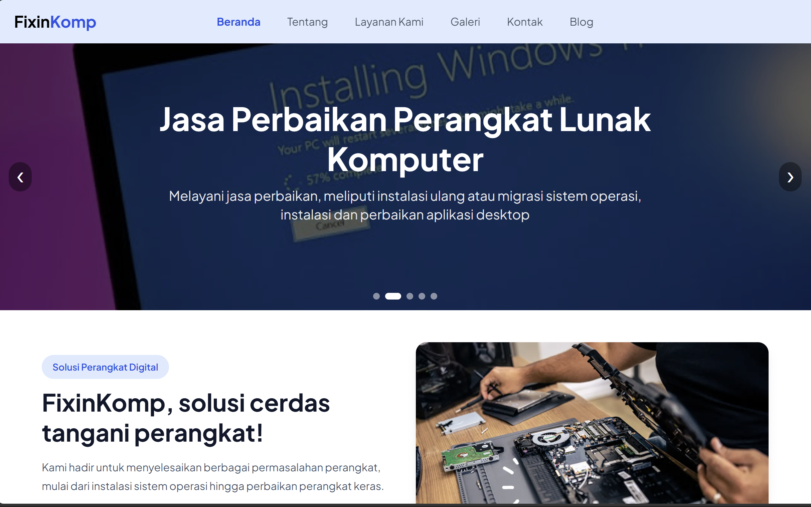
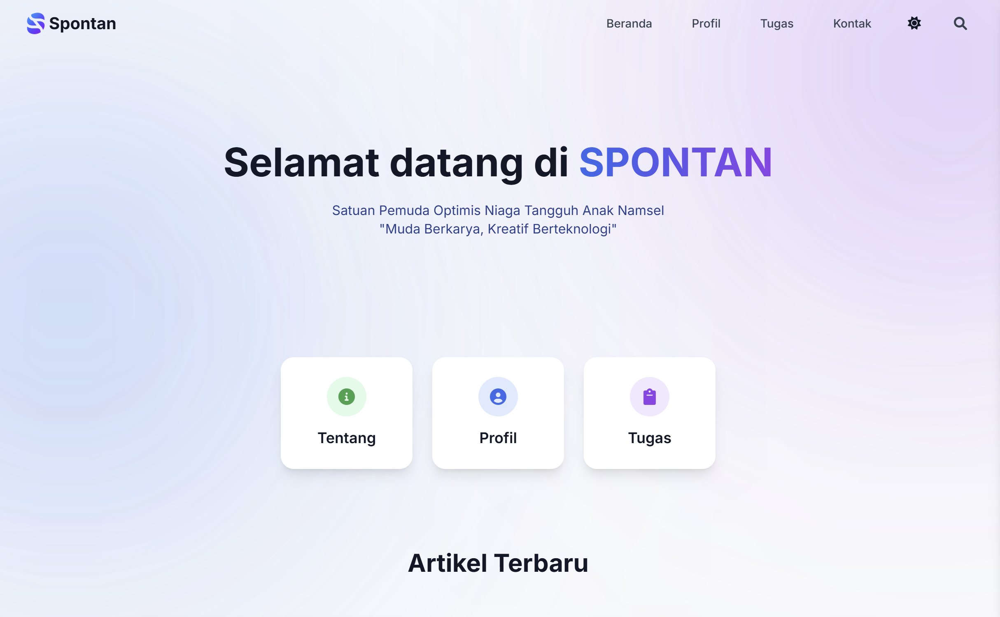
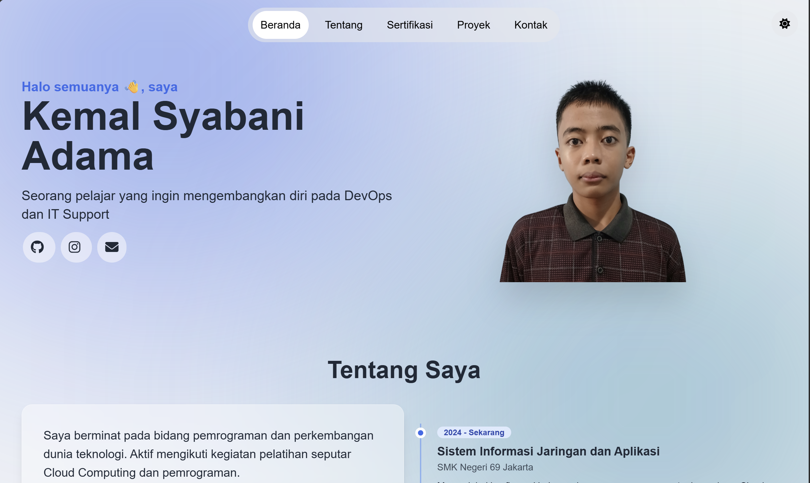
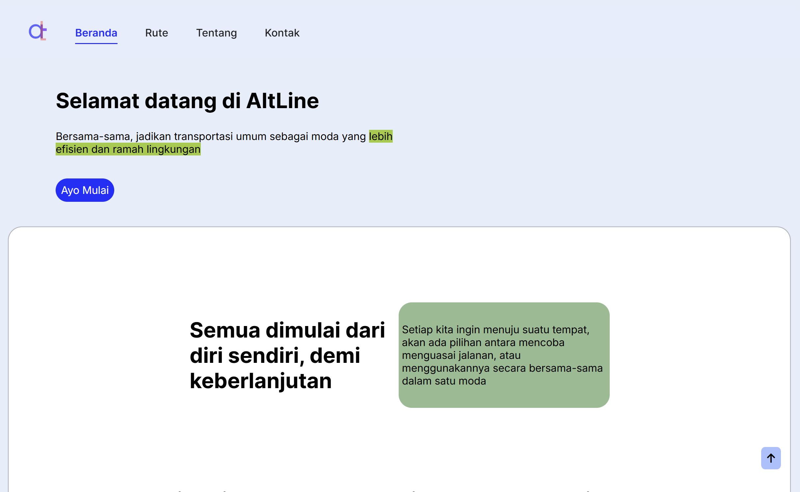

Tentang Saya
Saya berminat pada bidang pemrograman dan perkembangan dunia teknologi. Aktif mengikuti kegiatan pelatihan seputar Cloud Computing dan pemrograman.
Sistem Informasi Jaringan dan Aplikasi
SMK Negeri 69 Jakarta
Mempelajari konfigurasi jaringan dasar, pemrograman, serta dasar-dasar Cloud Computing.
Frontend Web Development
Cloud Computing (basic)
Programming Tools
Networking & System Tools
Sertifikasi
Peserta Kegiatan I Am Okay Goes to School with UT Youth Movement
Penerbit: PT United Tractors Tbk
Diterbitkan: Sept 2025
Lihat SertifikatPeserta Webinar Jakarta Solid
Penerbit: Dinas Komunikasi, Informatika dan Statistik Provinsi DKI Jakarta
Diterbitkan: Mei 2026
Lihat SertifikatBerinovasi dengan AI
Penerbit: Yayasan Plan International Indonesia
Diterbitkan: Sep 2026
Lihat SertifikatSpec-Driven Development dengan Kiro
Penerbit: Dicoding dan AWS
Diterbitkan: Okt 2026 (berlaku hingga: Okt 2029)
Lihat SertifikatBelajar Dasar Cloud dan Gen AI di AWS
Penerbit: Dicoding dan AWS
Diterbitkan: Okt 2026 (berlaku hingga: Okt 2029)
Lihat SertifikatMemulai Pemrograman Dengan Python
Penerbit: Dicoding
Diterbitkan: Okt 2026 (berlaku hingga: Okt 2029)
Lihat SertifikatProyek

FixinKomp
Website company profile FixinKomp (fiktif) dengan Content Management System. Proyek dalam pelatihan kompetensi web development.

Instalasi Ulang PC Lab Komputer Sekolah
Memasang ulang Windows dan driver perangkat keras di laboratorium komputer sekolah.

Test-EPG
Workflow GitHub Actions untuk menghasilkan file XML EPG jadwal siaran televisi Indonesia.

Redesign Blogspot
Template XML blogger untuk merancang ulang tampilan blogspot, dengan isi konten yang dapat disesuaikan.

Website Portofolio Kemal
Website portofolio pribadi. Berisi informasi tentang pengalaman dan keterampilan, serta media sosial Kemal Syabani Adama.

AltLine
Website statis informasi seputar transportasi umum. Proyek pertama saya dalam tahap awal pembelajaran pengembangan web.